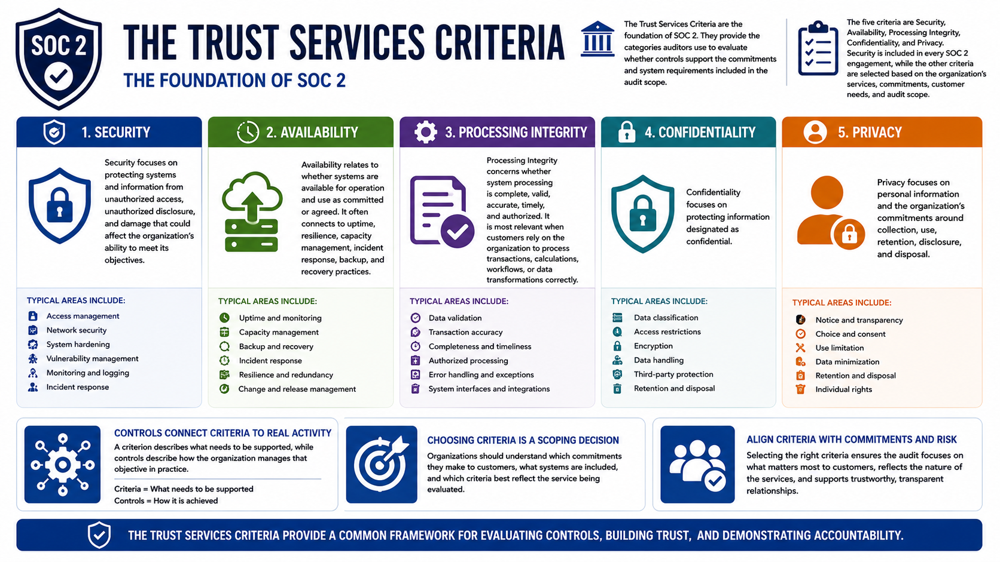

What Is SOC 2?
Understanding the Trust Services Criteria
Connecting to LMS... Progress: in progress
Version 1.0 | Date: 2026-06-16 | Educational overview of SOC 2 concepts, controls, evidence, and trust.

Narration
The Trust Services Criteria are the foundation of SOC 2. They provide the categories auditors use to evaluate whether controls support the commitments and system requirements included in the audit scope.
The five criteria are Security, Availability, Processing Integrity, Confidentiality, and Privacy. Security is included in every SOC 2 engagement, while the other criteria are selected based on the organization's services, commitments, customer needs, and audit scope.
Security focuses on protecting systems and information from unauthorized access, unauthorized disclosure, and damage that could affect the organization's ability to meet its objectives.
Availability relates to whether systems are available for operation and use as committed or agreed. It often connects to uptime, resilience, capacity management, incident response, backup, and recovery practices.
Processing Integrity concerns whether system processing is complete, valid, accurate, timely, and authorized. It is most relevant when customers rely on the organization to process transactions, calculations, workflows, or data transformations correctly.
Confidentiality focuses on protecting information designated as confidential. Privacy focuses on personal information and the organization's commitments around collection, use, retention, disclosure, and disposal.
Controls connect these criteria to real activity. A criterion describes what needs to be supported, while controls describe how the organization manages that objective in practice.
Choosing criteria is therefore a scoping decision. Organizations should understand which commitments they make to customers, what systems are included, and which criteria best reflect the service being evaluated.